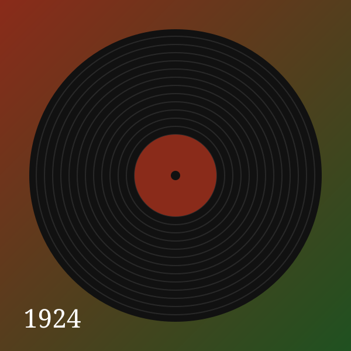

Roba Stanley & Bill Patterson, “Little Frankie” (Okeh 40436, matrix 8848; recorded December 1924)

Background: This is more than a title-only association. The LOC finding aid preserves the opening narrative and the lover's wrongdoing; Wolfe's account identifies the performance as a female-voiced version of “Frankie and Johnnie” in which Frankie kills Alvin, is tried and acquitted. The song therefore represents retaliation for perceived romantic betrayal, with a woman as the retaliating protagonist. It is a narrative representation, not evidence of the singer's own experience or endorsement.
Proposed role: revenge / retaliatory murder ballad, female-voiced Frankie variant